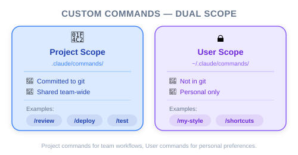
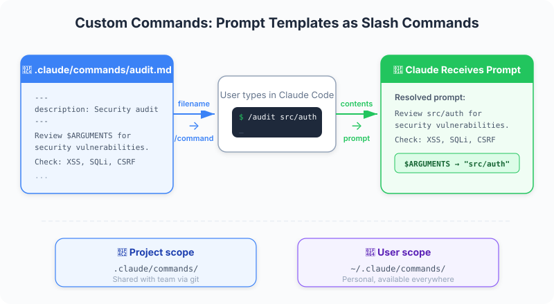
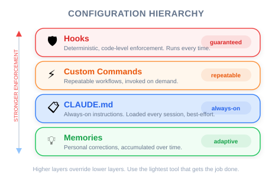

| Item | Details |
|---|---|
| Exam Coverage | D3 — Claude Code Configuration & Workflows (20% of exam) |
| Task Statements | 3.2 ★★★ (custom commands & skills), 3.1 ★★ (CLAUDE.md config) |
| Course Source | claude-code-in-action / 03-context-and-commands / Lesson 11 |
Custom commands are reusable workflow templates that your engineering team can create and share. Instead of each developer writing their own prompt for common tasks (auditing dependencies, writing tests, reviewing code), the team defines a command once in .claude/commands/ and everyone uses it the same way. PMs should care because this is how you standardize AI-assisted workflows across a team — reducing inconsistency and onboarding friction.
/audit instead of their own version of "check my dependencies," the output is predictable/ to see all available workflows without reading documentationThink of custom commands as a team playbook — a shared set of standard operating procedures.
| Without Commands | With Commands |
|---|---|
| "How does our team audit dependencies?" — ask a senior dev | Type /audit — everyone follows the same process |
| "What's our test-writing convention?" — read documentation | Type /write_tests src/auth.ts — convention is built in |
| Each developer's output is slightly different | Standardized output across the team |
| Knowledge lives in people's heads | Knowledge lives in the codebase |
💡 PM Takeaway
Custom commands are how you turn tribal knowledge into shared infrastructure. If you hear "only Alice knows how to do X," that workflow should become a command.
.claude/commands/ folderaudit.md → /audit)$ARGUMENTS lets users pass in specific details when running the commandExample: /write_tests src/auth.ts tells Claude: "Write tests for src/auth.ts following our project's test patterns."

Your team grew from 3 to 8 engineers in two months. You notice:
- Code review comments are repetitive ("you forgot to add tests," "wrong import pattern")
- New engineers take a week to learn project conventions
- AI-generated code quality varies widely between developers
| Problem | Command Solution | Impact |
|---|---|---|
| Inconsistent test patterns | /write_tests $ARGUMENTS — encodes test conventions |
All AI-generated tests follow the same structure |
| Forgotten dependency audits | /audit — runs full audit + fix + test cycle |
One-click compliance check |
| Varying code review quality | /review $ARGUMENTS — standardized review checklist |
Consistent review output |
| Slow onboarding | New devs type / to see all team workflows |
Self-service discoverability |
🎯 PM Takeaway
When planning AI-assisted development workflows, ask engineering: "Which repetitive tasks should become custom commands?" This is a low-effort, high-impact improvement.
PMs often confuse when to use which tool. Here is the practical distinction:
| Tool | Analogy | When PM Should Request It |
|---|---|---|
| Custom Commands | SOP playbook | "Every developer should follow the same process for X" |
| CLAUDE.md | Project README for Claude | "Claude should always know Y about our project" |
| Hooks | Automated compliance check | "Z must never happen — we need a guarantee" |
| Memories | Personal sticky notes | Individual preference — PM does not manage this |
$ARGUMENTS accepts any text — Not just file paths. You could create /estimate $ARGUMENTS where the argument is a feature description.Your engineering team uses Claude Code but each developer writes their own prompt for common tasks. This leads to inconsistent code quality. As a PM, which recommendation would have the most impact on standardization?
.claude/commands/ for the most common workflows and commit them to the repoA new engineer joins your team and asks "how do I know what AI workflows are available?" What feature of custom commands addresses this?
/ in Claude Code lists all available commands, including team-defined custom commands